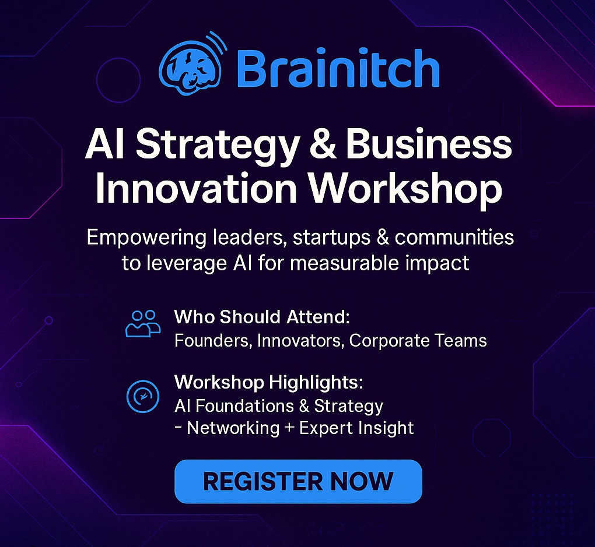

Welcome to Brainitch Solutions
Brainitch Solutions is a creative innovation studio that empowers mission-driven organizations, startups, and communities to transform bold ideas into measurable impact. At the heart of our process—content, community, and capital—we provide strategic consulting, media‑rich storytelling, and venture collaboration to help teams ideate, activate, and scale.
What we do:
Strategic consulting & emerging tech advisement: Guiding AI‑powered organizations like AI LA, FBRC.ai, and innovative brands like Bobble Sports and Grassy Vibes through digital transformation and growth.
Media production & brand narratives: Crafting immersive videos, podcasts, and written content that tell compelling stories and drive engagement.
Venture collaboration & community events: From hosting hackathons to co‑creating startup showcases, we build ecosystems where innovation thrives—and where capital meets creativity.
Who we serve:
Community-fueled initiatives (e.g., AI LA), technology startups (FBRC.ai, Bobble Sports), and purpose-driven e‑commerce brands (Grassy Vibes), all rooted in emerging technologies and storytelling.

Register for Workshops